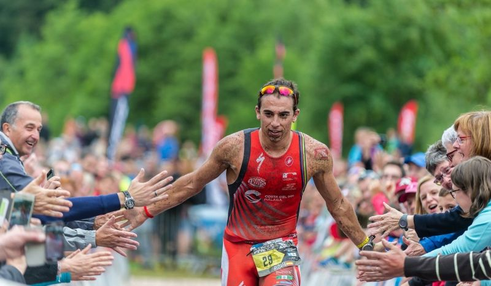

Escrito por Iker Roca | 22 de mayo de 2024
El triatleta español Rubén Ruzafa ha comenzado la temporada 2024 con una impresionante victoria en el XTerra de Portugal, celebrado este fin de semana en la hermosa región del Algarve. Ruzafa, conocido por su fuerza y resistencia en las competiciones off-road, dominó todas las fases de la prueba para asegurar su primer triunfo del año.
Desde el comienzo de la competencia, Ruzafa mostró su determinación y habilidades. En la etapa de natación, se mantuvo en el grupo de cabeza, asegurándose una buena posición para la transición al segmento de ciclismo. Fue en esta etapa donde el español realmente brilló, aprovechando su destreza en el mountain bike para tomar la delantera.
Con un recorrido de ciclismo técnico y desafiante, Ruzafa estableció un ritmo implacable, aumentando su ventaja sobre sus competidores. Su experiencia y técnica en terrenos difíciles le permitieron navegar las pistas con eficiencia y velocidad, consolidando su posición de liderazgo.
La etapa final de carrera a pie fue el momento decisivo. Rubén Ruzafa mantuvo su ventaja y continuó con un ritmo constante, a pesar de los intentos de sus rivales por alcanzarlo. La multitud animaba al español mientras avanzaba hacia la meta, demostrando su resistencia y capacidad para manejar la presión en los momentos cruciales.
Tras cruzar la línea de meta, Ruzafa expresó su satisfacción con su desempeño: "Es un gran comienzo de temporada. He trabajado duro durante el invierno y estoy feliz de ver que ese esfuerzo ha dado frutos. El XTerra de Portugal es una de mis competiciones favoritas, y ganar aquí significa mucho para mí."
Los organizadores y espectadores elogiaron la actuación de Ruzafa, destacando su habilidad y determinación. "Rubén es un competidor excepcional y siempre es un placer verlo competir. Su victoria hoy es un testimonio de su dedicación y talento," comentó uno de los organizadores del evento.
Con esta victoria, Rubén Ruzafa se posiciona como uno de los favoritos para la temporada de triatlón off-road. Sus próximos desafíos incluirán competiciones clave en el calendario XTerra, donde buscará mantener su racha de éxitos y continuar demostrando su dominio en este exigente deporte.
El inicio de temporada de Ruzafa es una inspiración para muchos jóvenes triatletas y un recordatorio del nivel de excelencia que se puede alcanzar con dedicación y pasión por el deporte. La comunidad del triatlón espera con ansias sus próximas actuaciones y celebra su éxito en Portugal.
Referencia: XTerra News, Federación Española de Triatlón.